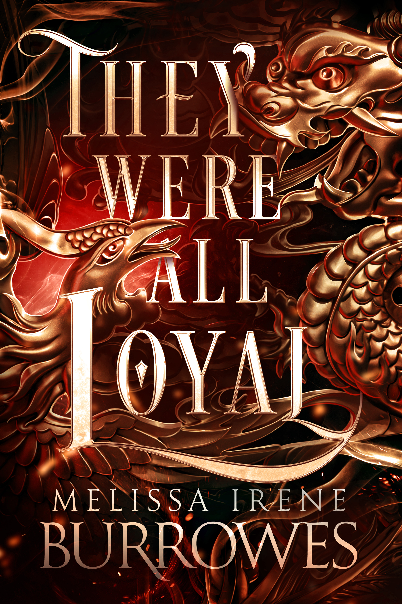

Original Work
(or, a myriad of fantasy adventures and misadventures)
Picture a world where animals talk, entwine it with political intrigue, and dial the peril up to eleven.
If that sounds like your cup of tea, might I interest you in my original fiction? They can be read as standalone novels (dark-fantasy genre).
Available for purchase on Amazon. They're also posted on AO3 and here on my website!
In Permafrost, TV reporter Samantha West and cameraman Dave Candid investigate an arctic fox poaching ring. But when their digging unearths corruption in high places, with ties to the neighboring nation of Longguo, it might be left in the paws of their cat, Geronimo, to save not just the foxes but them.

In They Were All Loyal, Prime Minister James Tresser contends with the diplomatic fallout of the fox poaching scandal. Human and animal lives collide as the cold war between Sarrilla and Longguo heats up, but between deadly impasses and mysterious prophecies the question for Tresser remains: who can be trusted?

They Were All Loyal
Amazon 𖤓 AO3